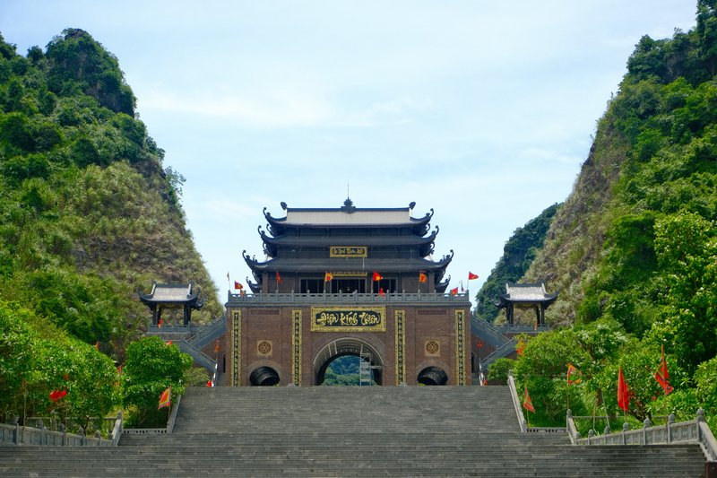
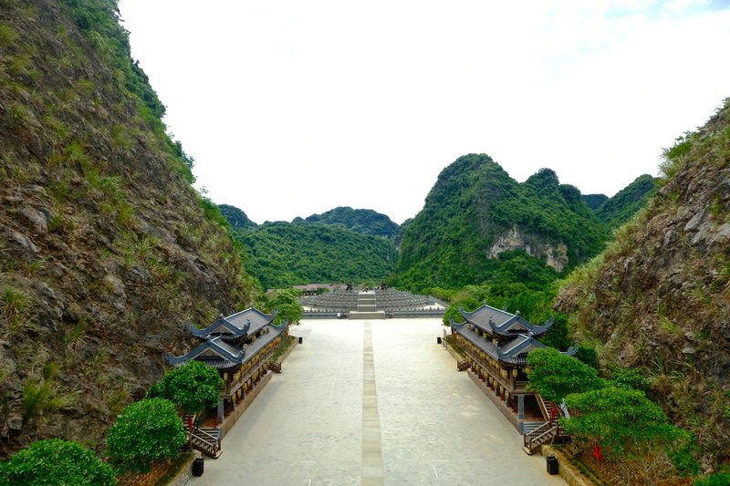
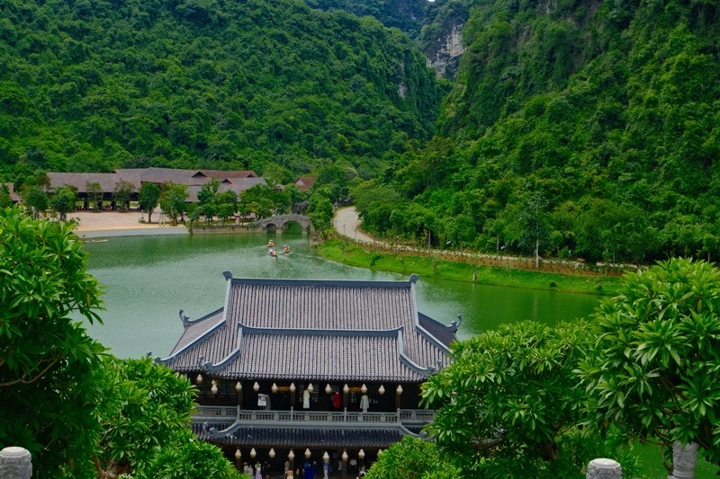
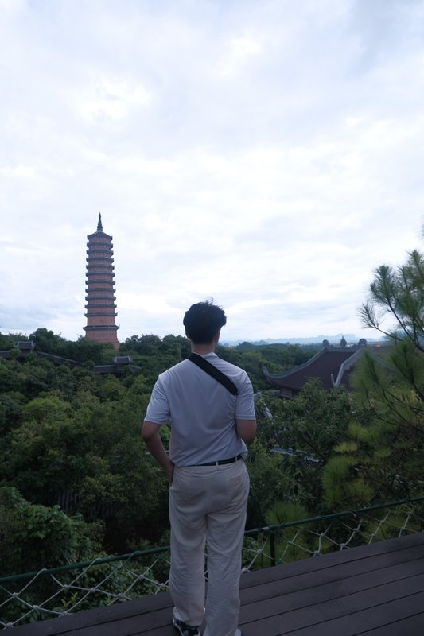
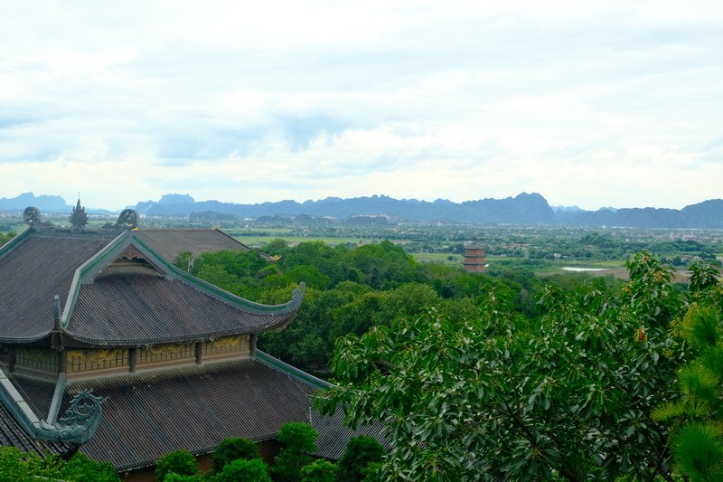

Landscape · Album 03 / 13
A trip with friends in July. Temples, a pagoda sitting on the pond, and the walkway between the limestone cliffs.





 Next albumHội An after darkHội An, Vietnam · July 2025 · 3 photos
Next albumHội An after darkHội An, Vietnam · July 2025 · 3 photos
Want photos like these? DM me on Instagram or call 0490 324 875.